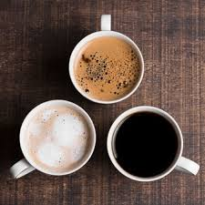
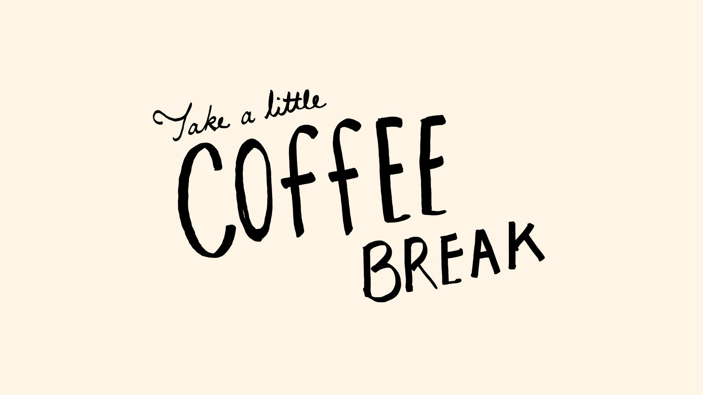
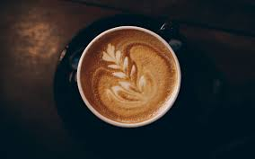

ABOUT US
Our story began in 1971. Back then we were a roaster and retailer of whole bean and ground coffee, tea and spices with a single store in Seattle’s Pike Place Market. Today, we are privileged to connect with millions of customers every day in 76 markets.
Every day, we go to work hoping to do two things: share great coffee with our friends and help make the world a little better. It was true when the first Starbucks opened in 1971 and it’s just as true today.
From the beginning, Starbucks set out to be a different kind of company. One that not only celebrated coffee and the rich tradition, but that also brought a feeling of connection.
Our mission: to inspire and nurture the human spirit – one person, one cup, and one neighbourhood at a time.
SINCE 1971
The first Starbucks was opened in Seattle, Washington, on March 31, 1971 by three partners who met while they were students at the University of San Francisco English teacher Jerry Baldwin, history teacher Zev Siegl, and writer Gordon Bowker were inspired to sell high-quality coffee beans and equipment by coffee roasting entrepreneur Alfred Peet after he taught them his style of roasting beans.
The first Starbucks store was located in Seattle at 2000 Western Avenue from 1971–1976. This cafe was later moved to 1912 Pike Place. During this time, the company only sold roasted whole coffee beans and did not yet brew coffee to sell. During their first year of operation, they purchased green coffee beans from Peet's, then began buying directly from growers.


OUR HERITAGE
It happens millions of times each week – a customer receives a drink from a Crush Coffee barista – but each interaction is unique.
It’s just a moment in time – just one hand reaching over the counter to present a cup to another outstretched hand.
But it’s a connection.
We make sure everything we do honors that connection – from our commitment to the highest quality coffee in the world, to the way we engage with our customers and communities to do business responsibly.
OUR MISSION
Our mission is to inspire and nurture the human spirit – one person, one cup and one neighbourhood at a time.
OUR COFFEE
It has always been, and will always be, about quality. We’re passionate about ethically sourcing the finest coffee beans, roasting them with great care and improving the lives of people who grow them. We care deeply about all of this; our work is never done.
Our Partners
We’re called partners, because it’s not just a job, it’s our passion. Together, we embrace diversity to create a place where each of us can be ourselves. We always treat each other with respect and dignity. And we hold each other to that standard.
Our Customers
When we are fully engaged, we connect with, laugh with and uplift the lives of our customers – even if just for a few moments. Sure, it starts with the promise of a perfectly made beverage, but our work goes far beyond that. It’s really about human connection.
“What on earth 🌏 could be more luxurious than a sofa 💺, a book 📖, and a cup of coffee 🍵?”